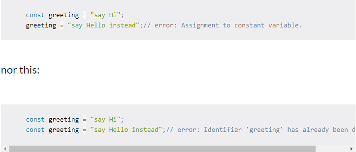
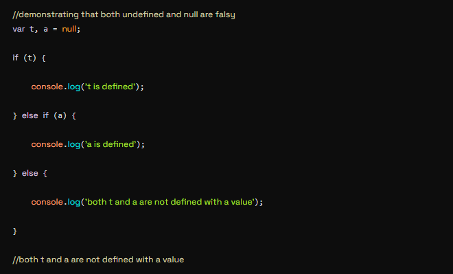

Var, Let, and Const – What's the Difference?
While this assumption might be partially true, it's still possible that some of these features remain a mystery to some devs. One of the features that came with ES6 is the addition of let and const, which can be used for variable declaration. The question is, what makes them different from good ol' var which we've been using? If you are still not clear about this, then this article is for you. In this article, we'll discuss var, let and const with respect to their scope, use, and hoisting. As you read, take note of the differences between them that I'll point out.
1. Problem with var
There's a weakness that comes with var. I'll use the example below to explain:
So, since times > 3 returns true, greeter is redefined to "say Hello instead". While this is not a problem if you knowingly want greeter to be redefined, it becomes a problem when you do not realize that a variable greeter has already been defined before. If you have used greeter in other parts of your code, you might be surprised at the output you might get. This will likely cause a lot of bugs in your code. This is why let and const are necessary.
2. Let
let is now preferred for variable declaration. It's no surprise as it comes as an improvement to var declarations. It also solves the problem with var that we just covered. Let's consider why this is so.
let is block scoped
A block is a chunk of code bounded by {}. A block lives in curly braces. Anything within curly braces is a block. So a variable declared in a block with let is only available for use within that block. Let me explain this with an example:

3. Const
Variables declared with the const maintain constant values. const declarations share some similarities with let declarations.
const cannot be updated or re-declared
This means that the value of a variable declared with const remains the same within its scope. It cannot be updated or re-declared. So if we declare a variable with const, we can neither do this:
Var, Let, and Const – What's the Difference?
Introduction to undefined and null values
Many times we often get confused on what the difference between UNDEFINED and NULL is. Simply put, undefined means a variable has been declared but has not yet been assigned a value. undefined is a type by itself (undefined). Unassigned variables are initialized by JavaScript with a default value of undefined.

Undefined vs null - the differences
The data type of undefined is undefined whereas that of null is object. We can find the datatypes of both undefined and null using the typeof operator.
When used in arithmetic operations, undefined will result in NaN (not a number), whereas null will be converted to 0 behind the screens.
Undefined and null are falsy:
Here the boolean double negation operator aka the bang bang operator is used to check the boolean equivalent of a value.
Why is Null an object?
As promised, now let’s look as to why the type of null is an “object”. As it then indicates that null must be an object, which is not true. In fact, null is one of the primitive values in JavaScript. It is actually a bug in the language and unfortunately can’t be fixed that easily, as it will break the existing codebase. However, there is actually one logical explanation behind why null is an object in javascript. In the initial version of JavaScript, values were stored in 32 bit units. The first 3 bits represented the data type tag followed by the remaining bits that represented the value. For all objects it was 000 as the type tag bits. null was considered to be a special value in JavaScript from its very first version. null was a representation of the null pointer. However, there were no pointers in JavaScript like C. So null simply meant nothing or void and was represented by all 0’s. Hence all its 32 bits were 0’s. So whenever the JavaScrit interpreter reads null, it considers the first 3 bits as type “object”. That is why typeof null returns “object”.
What do you mean by REST API?
Representational State Transfer (REST) is an architectural style that defines a set of constraints to be used for creating web services. REST API is a way of accessing web services in a simple and flexible way without having any processing.
REST technology is generally preferred to the more robust Simple Object Access Protocol (SOAP) technology because REST uses less bandwidth, simple and flexible making it more suitable for internet usage. It’s used to fetch or give some information from a web service. All communication done via REST API uses only HTTP request. Working: A request is sent from client to server in the form of a web URL as HTTP GET or POST or PUT or DELETE request. After that, a response comes back from the server in the form of a resource which can be anything like HTML, XML, Image, or JSON. But now JSON is the most popular format being used in Web Services.
In HTTP there are five methods that are commonly used in a
REST-based Architecture i.e., POST, GET, PUT, PATCH, and DELETE.
These correspond to create, read, update, and delete (or CRUD)
operations respectively. There are other methods which are less
frequently used like OPTIONS and HEAD.
GET: The HTTP GET method is used to read (or
retrieve) a representation of a resource. In the safe path, GET
returns a representation in XML or JSON and an HTTP response code
of 200 (OK). In an error case, it most often returns a 404 (NOT
FOUND) or 400 (BAD REQUEST).
POST: The POST verb is most often utilized to
create new resources. In particular, it’s used to create
subordinate resources. That is, subordinate to some other (e.g.
parent) resource. On successful creation, return HTTP status 201,
returning a Location header with a link to the newly-created
resource with the 201 HTTP status.
PUT: It is used for updating the capabilities.
However, PUT can also be used to create a resource in the case
where the resource ID is chosen by the client instead of by the
server. In other words, if the PUT is to a URI that contains the
value of a non-existent resource ID. On successful update, return
200 (or 204 if not returning any content in the body) from a PUT.
If using PUT for create, return HTTP status 201 on successful
creation. PUT is not safe operation but it’s idempotent.
PATCH: It is used to modify capabilities. The
PATCH request only needs to contain the changes to the resource,
not the complete resource. This resembles PUT, but the body
contains a set of instructions describing how a resource currently
residing on the server should be modified to produce a new
version. This means that the PATCH body should not just be a
modified part of the resource, but in some kind of patch language
like JSON Patch or XML Patch. PATCH is neither safe nor
idempotent.
DELETE: It is used to delete a resource
identified by a URI. On successful deletion, return HTTP status
200 (OK) along with a response body.